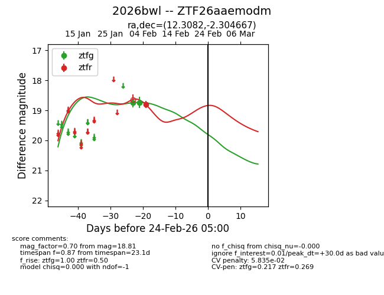
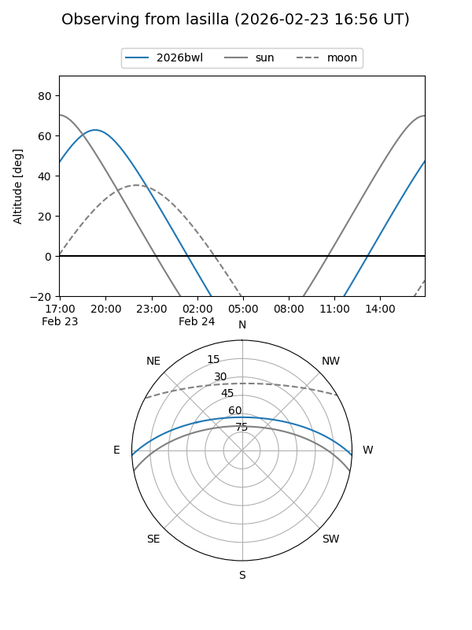
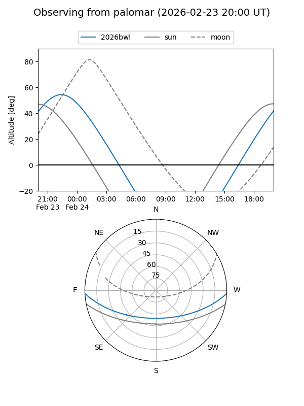

2026bwl
Target 2026bwl at 2026-02-24 09:08
Aliases and brokers:
FINK: link
Lasair: link
ALeRCE: link
TNS: link
YSE: link
alt names
ZTF26aaemodm (ztf,fink_ztf)
2026bwl (tns,yse)
Coordinates:
equatorial (ra, dec) = 12.3082,-2.30467
equatorial (HMS+DMS) = 00:49:13.96,-02:18:16.80
galactic (l, b) = (121.6200,-65.17080)
Flags:
likely cv
Photometry:
last ztfg=18.73, ztfr=18.81
2 ztfg, 1 ztfr detections
Lightcurve

Visibility


Additional plots